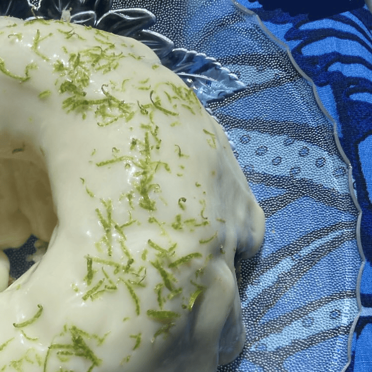
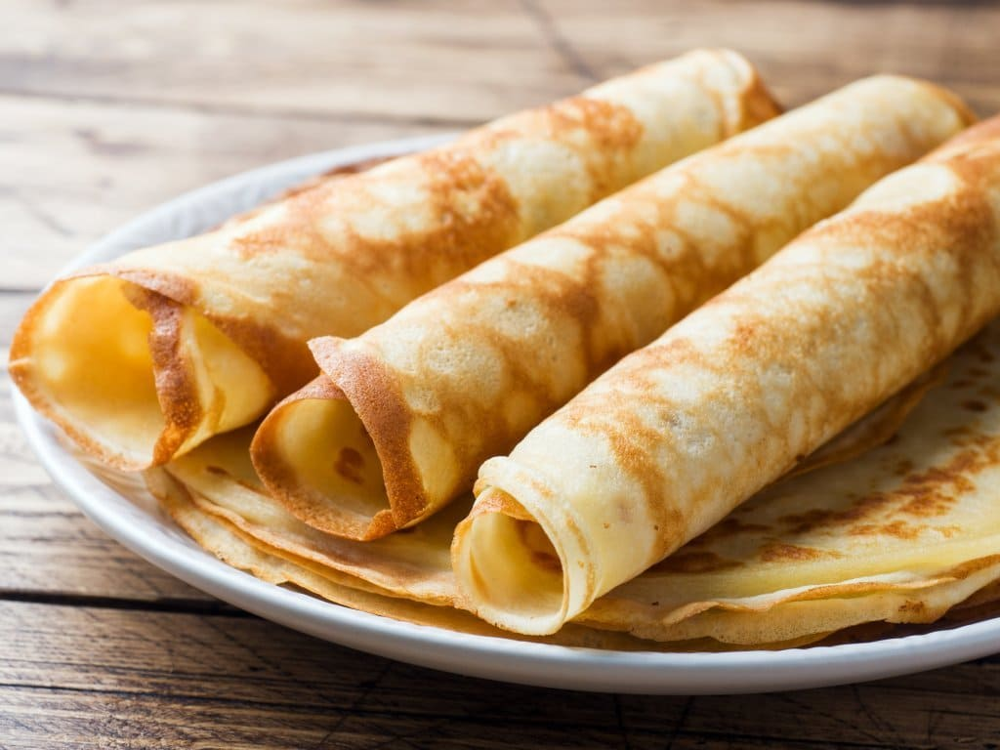

Receitas
Escolha a sua receita:
| Receita: | Dificuldade: | Descrição: |
|---|---|---|
| Cuca de Banana com farofa crocante | Fácil, Apróx 1 hora total | Uma receita que perfuma a casa inteira e traz aquele cheirinho de tarde na cozinha da vó, com o forno ligado e o café passado na hora. Cada pedaço é doce, macio e cheio de carinho. |
| Bolo de limão tahiti | Fácil, Apróx 50min total | Uma receita que te leva ao pé de limão do quintal, sendo fácil de fazer e boa para levar no piquenique da tarde! Zero lactose para incluir seu parente que não pode com leite. Inclusive é vegano! |
| Panquecas hungaras | Fácil, aprox. 30min no total | Um cheirinho de casa, um abraço em forma de massa fina e dourada. O queijinho derrete, a canela perfuma — e cada mordida lembra que o amor também se serve quente. |

Uma receita que perfuma a casa inteira e traz aquele cheirinho de tarde na cozinha da vó, com o forno ligado e o café passado na hora. Cada pedaço é doce, macio e cheio de carinho.

Uma receita que te leva ao pé de limão do quintal, sendo fácil de fazer e boa para levar no piquenique da tarde! Zero lactose para incluir seu parente que não pode com leite. Inclusive é vegano!

Um cheirinho de casa, um abraço em forma de massa fina e dourada. O queijinho derrete, a canela perfuma — e cada mordida lembra que o amor também se serve quente.
Voltar ao topo